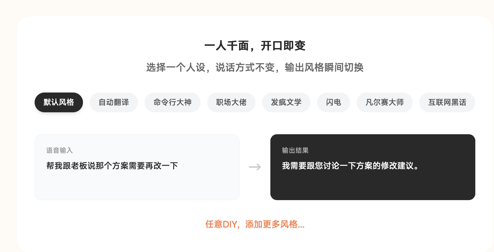
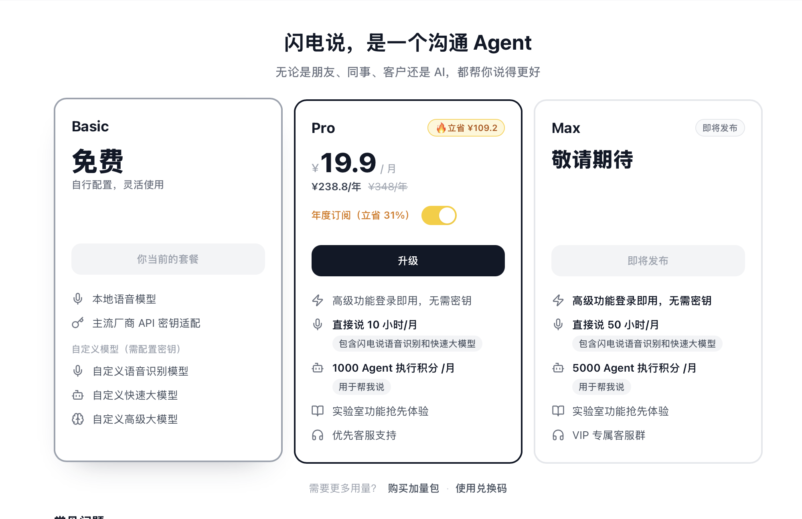

AI 语音输入工具怎么选？别只看识别率，先看你要用它做什么
你有没有发现，和 AI 对话的时候，最慢的往往不是 AI。
而是我们打字的手。
脑子里已经想好了一段话。
手还在键盘上一个字一个字敲。
尤其是写公众号、改文案、做会议纪要、和 AI 来回追问的时候，这种感觉会特别明显。
所以这两年，我越来越觉得：语音输入不是一个“懒人工具”。
它更像是 AI 时代的新键盘。
但语音输入工具不能乱选。
因为它们看起来都叫“语音转文字”，实际解决的不是同一个问题。
有些适合中文聊天。
有些适合英文邮件。
有些适合会议采访。
有些主打本地运行和隐私。
如果只问“哪个识别率最高”，很容易选错。
这篇我按普通办公、自媒体写作和 AI 对话场景，把常见工具重新整理了一遍。
注：价格和免费额度以 2026 年 6 月 14 日公开页面为准，后续可能调整，购买前以官网为准。
先给结论
如果你只想先提高中文输入效率：
豆包输入法 + 智谱 AI 输入法 可以先试。
一个偏手机，一个偏电脑。
如果你每天都在和 AI 对话：
重点看 千问 PC 语音输入、闪电说。
它们不只是把声音变成文字，而是更接近“用语音驱动 AI 工作”。
如果你主要写英文邮件、跨语言沟通：
重点看 Typeless，预算低可以先试 Wispr Flow 免费版。
如果你要处理会议、采访、课程录音：
不要拿输入法硬撑，直接看 飞书妙记、讯飞听见、MacWhisper。
如果你最在意隐私：
重点看 闪电说、MacWhisper。
一个偏实时输入，一个偏长音频本地转写。
一张表先看懂
| 需求 | 优先试 | 免费情况 | 付费重点 | 判断 |
|---|---|---|---|---|
| 手机中文输入 | 豆包输入法 / 微信输入法 | 核心输入能力免费 | 暂未查到独立语音订阅 | 中文、方言、日常聊天优先 |
| 电脑中文输入 | 智谱 AI 输入法 | 官方 FAQ 写明 AI 语音输入免费 | 暂未查到独立语音订阅 | 写稿、问 AI、办公输入适合先试 |
| AI 办公指令 | 千问 PC 语音输入 | 公开报道显示目前免费开放 | 暂未查到独立语音订阅 | 更像“说话让 AI 干活” |
| 隐私和本地 | 闪电说 | Basic 免费，支持本地语音模型和 API 密钥适配 | Pro 年付折算 ¥19.9/月，月付 ¥29/月；含直接说 10 小时/月、1000 Agent 积分/月 | 适合隐私敏感和电脑重度输入 |
| 英文/多语言 | Typeless | 免费 8000 words/week | Pro 年付 $12/月，月付 $30/月 | 英文邮件和表达整理强，价格不低 |
| 英文轻量尝试 | Wispr Flow | 桌面 2000 words/week，iPhone 1000 words/week | Pro 年付 $12/月，月付约 $15/月 | 英文场景可以试，中文谨慎付费 |
| 飞书会议 | 飞书妙记 | 基础免费版曾给 300 分钟/用户/月 | 商业版/企业版妙记转写不限 | 已经用飞书就很顺 |
| 专业转写 | 讯飞听见 | 录音和实时浏览免费 | 机器快转约 0.33 元/分钟，也有时长卡 | 采访、课程、长会议更合适 |
| 本地长音频 | MacWhisper | 免费版可用小模型 | 官网直购为一次性许可证，价格以结账页为准 | Mac 用户、隐私音频、长录音适合 |
| 英文会议 | Notta / Otter | Notta 免费 120 分钟/月；Otter 免费 300 分钟/月 | Pro 多为按月/年订阅 | 英文会议比中文写作更适合 |
怎么用
| 工具 | 下载/入口 |
|---|---|
| 豆包输入法 | 豆包输入法官网 |
| 微信输入法 | 微信输入法官网 |
| 智谱 AI 输入法 | 智谱 AI 输入法官网 |
| 千问 PC | 千问下载页 |
| 闪电说 | 闪电说官网 / 价格页 |
| Typeless | Typeless 下载页 / 价格页 |
| Wispr Flow | Wispr Flow 官网 / 价格页 |
| 飞书妙记 | 飞书妙记官网 |
| 讯飞听见 | 讯飞听见官网 |
| MacWhisper | MacWhisper 官网 |
| Notta | Notta 官网 / 价格页 |
| Otter | Otter 官网 / 免费版说明 |
1. 豆包输入法：中文和方言，普通人可以先试它
豆包输入法适合手机端。
它的优势不是功能最复杂，而是中文语音输入比较顺。
方言、轻声输入、中英混输、语义纠错，这些都是它比较适合日常使用的地方。
很多人用语音输入，不可能每次都像播音员一样标准普通话。
有时候是在路上小声说。
有时候带一点口音。
有时候一句话里夹几个英文词。
这种情况下，豆包输入法的优势会比较明显。
免费能做什么：
- 日常语音输入。
- 中文、方言、中英混输。
- 聊天、灵感记录、短文本输入。
付费情况：
- 目前没有查到独立语音输入订阅价格。
适合谁：
- 手机重度用户。
- 方言用户。
- 经常在路上记录选题和灵感的人。
不适合谁：
- 需要处理一小时会议录音的人。
- 想自动生成完整会议纪要的人。
一句话建议：
中文普通用户不知道先试哪个，就先试豆包输入法。
2. 微信输入法：不是最强，但最容易坚持用
微信输入法的优势是低门槛。
它就在很多人的日常工作流里。
你不用重新学习复杂快捷键，也不用先研究一堆设置。
如果你只是微信聊天、发朋友圈、写几句短内容，它已经够用。
但它的问题也很明显：
它不是为长文写作设计的。
它可以帮你把话输入进去，但不会把你的口语整理成特别漂亮的书面表达。
免费能做什么：
- 语音输入。
- 常用语、剪贴板等日常输入能力。
- 轻量问 AI。
付费情况：
- 目前没有查到独立语音输入订阅价格。
适合谁：
- 不想折腾新工具的人。
- 主要在微信生态里沟通的人。
不适合谁：
- 把语音输入当主力写作工具的人。
- 想要强 AI 改写和风格整理的人。
一句话建议：
它不是最强，但可能是最容易每天用起来的。
3. 智谱 AI 输入法：电脑端中文语音输入，值得先试

智谱 AI 输入法官网展示的“一人千面，开口即变”：选择人设后，说话方式不变，输出风格可以快速切换。
智谱 AI 输入法更适合电脑。
它的官方 FAQ 写得很直接：AI 语音输入功能全面免费开放。
这点对普通用户很友好。
因为很多人第一次尝试语音输入，并不确定自己能不能坚持用。
如果一上来就是高价订阅，很容易劝退。
智谱 AI 输入法适合在电脑上写文档、写公众号、和 AI 对话。
它的价值不是替你写文章，而是减少“想法到文字”中间的摩擦。
它还有一个很适合运营和职场沟通的功能：人设和风格切换。
官网示例里，你可以选择“默认风格、自动翻译、命令行大神、职场大佬、发疯文学、闪电、凡尔赛大师、互联网黑话”等风格。
同一句口语输入，输出可以变成更正式、更职场、更口语化，或者更适合某个沟通场景的表达。
这对运营人很有用。
因为很多时候，我们不是不知道要说什么，而是不知道这句话应该用什么语气发出去。
免费能做什么：
- AI 语音输入。
- 电脑端跨输入框使用。
- 用在微信、飞书、Word、代码编辑器等场景。
- 选择人设和输出风格，把口语转成不同场景下更合适的表达。
付费情况：
- 暂未查到独立语音输入订阅。
适合谁：
- Mac / Windows 上高频输入的人。
- 经常写稿、写文档、问 AI 的人。
- 想先免费试水的人。
不适合谁：
- 只在手机上输入的人。
- 完全不想登录或使用云端服务的人。
一句话建议：
电脑端中文语音输入，智谱是一个很适合先试的免费选项；如果你经常写运营话术、客户回复、职场沟通，它的人设/风格切换尤其值得试。
4. 千问 PC 语音输入：更像“说话让 AI 干活”
千问 PC 语音输入和普通输入法不太一样。
普通输入法解决的是：
你说一句，它打一句。
千问更接近：
你说一个任务，它帮你整理、回复、解释、翻译，甚至继续调用 AI 处理。
比如你可以说：
“帮我把这段话改得适合发给客户。”
或者：
“把这段会议内容整理成三个待办。”
这时候，它就不是单纯输入法，而是一个 AI 办公入口。
免费能做什么：
- 公开报道显示，目前 PC 语音输入功能免费开放。
- 支持语音输入、去语气词、纠错、格式化整理。
- 可以把语音变成 AI 指令。
付费情况：
- 暂未查到独立语音输入订阅。
适合谁：
- 经常让 AI 改写、总结、回复消息的人。
- 想在 Word、浏览器、微信、邮件里直接用 AI 的人。
不适合谁：
- 只想要一个简单输入法的人。
- 对新功能稳定性要求很高、不想尝鲜的人。
一句话建议：
如果你每天都在和 AI 对话，千问 PC 语音输入值得重点试。
5. 闪电说：本地优先，隐私敏感的人要重点看
这张是闪电说语音输入时的悬浮窗截图，交互很轻，核心就是“直接说”。

闪电说官网价格页显示：Basic 免费；Pro 年付折算 ¥19.9/月，月付 ¥29/月；Max 暂未发布。
闪电说最值得注意的点，不是它也能语音转文字。
而是它强调端侧优先、本地模型运行。
也就是说，它更关注一件事：
你的声音尽量在本机处理，而不是先上传到云端。
这对隐私敏感的人很重要。
比如你经常输入客户资料、内部文档、未发布选题，输入法是否上传音频，就不只是体验问题，而是边界问题。
它的另一个特点是轻。
从这张“直接说”的悬浮窗也能看出来，它不是一个很重的工作台，更像一个随时唤起的语音入口。
但本地模型也有代价。
有些评测提到，闪电说速度很爽，但遇到中英文混排、专有名词、说话太快时，准确率可能不如更大的云端模型。
免费能做什么：
- Basic 免费。
- 本地语音模型。
- 主流厂商 API 密钥适配。
- 自定义模型能力，包括自定义语音识别模型、快速大模型和高级大模型。
付费情况：
- Pro 年付折算 ¥19.9/月，¥238.8/年。
- Pro 月付 ¥29/月。
- Pro 包含“高级功能登录即用，无需密钥”。
- Pro 包含“直接说 10 小时/月”，并包含闪电说语音识别和快速大模型。
- Pro 包含 1000 Agent 执行积分/月，用于“帮我说”。
- Pro 包含实验室功能抢先体验、优先客服支持。
- 如果需要更多用量，官网价格页显示可以购买加量包，例如“直接说 10 小时”¥20，“Agent 执行 1000 积分”¥20。
- Max 版本显示“即将发布”，含直接说 50 小时/月和 5000 Agent 执行积分/月。
适合谁：
- 电脑端重度输入。
- 隐私敏感。
- 希望尽量本地处理语音的人。
- 经常写作、问 AI、回复消息的人。
不适合谁：
- 对中英混输、专有名词准确率要求极高的人。
- 不想接受新工具稳定性波动的人。
一句话建议：
如果你在意隐私，Basic 就值得试；如果你想少折腾密钥、直接用高级功能，Pro 的价格也不算高。
6. Typeless：英文和多语言很强，但中文用户不一定要买
Typeless 的核心价值，不是便宜。
它强在英文、多语言、邮件和表达整理。
它不是简单把语音转成文字，而是希望把你说出来的口语，整理成更像可以直接发送的文字。
这对英文办公很有价值。
比如写邮件、回客户、跨语言沟通。
但如果你主要写中文公众号，Typeless 不一定是第一选择。
因为中文场景里，豆包、智谱、千问、闪电说这些工具已经能覆盖不少需求。
而 Typeless 的价格并不低。
免费能做什么：
- 免费 8000 words/week。
- 标准准确率。
付费买到什么：
- Pro 年付 $12/月。
- 月付 $30/月。
- 无限字数、增强准确率、优先访问等能力。
适合谁：
- 英文邮件。
- 海外客户沟通。
- 中英混合、多语言办公。
- 希望把口语整理成正式表达的人。
不适合谁：
- 只写中文。
- 预算敏感。
- 对云端处理很介意。
一句话建议：
Typeless 很好，但更适合愿意为英文和多语言表达质量付费的人。
7. Wispr Flow：英文办公可以试，中文场景谨慎付费
Wispr Flow 在海外语音输入工具里讨论度很高。
它适合英文办公，比如 Slack、Gmail、Docs、ChatGPT 这些场景。
但中文用户要谨慎。
一些用户评价提到，它的中文识别和表达还原不一定稳定。
如果你的主要场景是中文写作、中文聊天，免费的豆包输入法、智谱 AI 输入法，可能更值得先试。
免费能做什么：
- 桌面端 2000 words/week。
- iPhone 1000 words/week。
付费买到什么：
- Pro 年付 $12/月。
- 月付约 $15/月。
- 更高额度和更多功能。
适合谁：
- 英文办公。
- 海外团队沟通。
- 已经在英文工作流里的人。
不适合谁：
- 中文为主。
- 预算敏感。
- 希望本地离线处理的人。
一句话建议：
英文场景可以试，中文场景不要先付费。
8. 飞书妙记：已经用飞书的人，会议纪要很顺
飞书妙记适合会议。
它的优势不是单纯转写，而是和飞书会议、文档、任务、团队协作打通。
如果你的团队本来就在飞书里开会，会议结束后直接生成纪要、待办、逐字稿，这件事会很自然。
但如果你只是个人写公众号，它不是第一选择。
它更适合把“开过的会”变成“可搜索、可分发、可追踪的内容”。
免费能做什么：
- 飞书基础免费版曾给到 300 分钟/用户/月妙记转写时长。
付费买到什么：
- 商业版/企业版妙记转写不限。
- AI 会员和智能纪要可能有额外额度规则。
适合谁：
- 飞书重度用户。
- 团队会议多的人。
- 需要会后纪要和待办沉淀的人。
不适合谁：
- 单纯写文章。
- 不在飞书生态办公的人。
一句话建议：
已经用飞书，它就是会议纪要首选；不用飞书，就不用为了妙记专门迁移。
9. 讯飞听见：专业转写成熟，但要按分钟算账
讯飞听见不是输入法。
它是录音转写工具。
这点要分清楚。
如果你要处理采访、课程、演讲、长会议，它比普通输入法合适。
因为这类场景要的不只是“把声音变成字”。
还要分段、回听、导出、整理、甚至人工精转。
讯飞听见的能力成熟，但长期使用要算成本。
免费能做什么：
- 录音免费。
- 录音过程中的实时转文字和翻译浏览免费。
付费买到什么：
- 分享或下载转文字内容需要收费。
- 机器快转约 0.33 元/分钟。
- App 内也有 10 分钟、30 分钟、1 小时等时长卡。
适合谁：
- 采访录音。
- 课程整理。
- 长会议转写。
- 需要导出 Word、字幕或精转的人。
不适合谁：
- 日常聊天输入。
- 和 AI 对话时即时输入。
- 不想按分钟付费的人。
一句话建议：
讯飞听见用在采访和会议上才值，不适合拿来替代输入法。
10. MacWhisper：Mac 用户处理隐私录音，可以单独考虑
MacWhisper 和前面这些输入法不一样。
它更像一个本地音频转写工作台。
你把音频文件放进去，它帮你转成文字。
它适合长音频，也适合隐私敏感内容。
比如访谈录音、播客、内部会议录音、还没发布的内容素材。
它的价值不在“随处输入”，而在“本地处理”。
免费能做什么：
- 免费版通常可以用较小模型做本地转写。
付费买到什么：
- 官网直购为一次性许可证。
- 具体价格建议以结账页为准。
- Pro 通常解锁更大模型和更多高级能力。
适合谁：
- Mac 用户。
- 经常处理长音频的人。
- 不想把音频上传云端的人。
不适合谁：
- Windows 用户。
- 想在微信、Obsidian、AI 对话框里随处输入的人。
- 不想研究模型和导入导出流程的人。
一句话建议：
如果你有 Mac，又经常处理敏感录音，MacWhisper 很值得看。
11. Notta / Otter：更适合英文会议，不是中文写作首选
Notta 和 Otter 更偏会议转写。
尤其是英文会议、国际团队、跨平台会议记录。
如果你主要做中文公众号写作，它们不是第一选择。
但如果你经常开英文会议，或者需要跨平台记录会议内容，可以放进备选。
免费能做什么：
- Notta 免费 120 分钟/月，但单次时长有限制。
- Otter 免费 300 分钟/月，单次 30 分钟。
付费买到什么：
- Notta Pro 年付 $8.17/月。
- Otter Pro 年付约 $8.33/月。
- 更长时长、更高额度和更多导出能力。
适合谁：
- 英文会议。
- 海外团队。
- 国际协作。
不适合谁：
- 中文写作。
- 中文聊天输入。
- 只想提高日常输入速度的人。
一句话建议：
英文会议可以看，中文自媒体写作不用优先考虑。
最后，怎么选最简单？
如果你是普通中文用户：
先试 豆包输入法 + 智谱 AI 输入法。
一个解决手机输入，一个解决电脑输入。
如果你是 AI 重度用户：
试 千问 PC 语音输入。
它不只是输入，还能把语音变成 AI 指令。
如果你最在意隐私：
试 闪电说 + MacWhisper。
一个偏实时输入，一个偏本地长音频转写。
如果你做英文办公：
试 Typeless。
预算低，先试 Wispr Flow 免费版。
如果你做采访和会议：
个人轻量先试 飞书妙记。
专业转写、导出、人工精转，再看 讯飞听见。
不要追求一个工具解决所有问题。
语音输入至少分三类：
flowchart TD
A["你要解决什么问题？"] --> B["日常输入"]
A --> C["AI 对话和办公指令"]
A --> D["会议/采访/课程录音"]
B --> E["豆包输入法 / 微信输入法 / 智谱 AI 输入法 / 闪电说"]
C --> F["千问 PC / Typeless / Wispr Flow"]
D --> G["飞书妙记 / 讯飞听见 / MacWhisper / Notta / Otter"]
如果只是聊天和日常办公，没必要一上来买 Typeless。
如果只是偶尔转一次会议，也没必要折腾本地模型。
如果你每天都写稿、问 AI、整理访谈，那语音输入就不是小工具了。
它会变成你的新键盘。
真正要选的不是“哪个识别率最高”。
而是：
你的声音，最后要去哪里。
是进入聊天框。
进入 AI 对话框。
还是进入一份会议纪要。
这个问题想清楚了，工具就很好选。
我是 黎子，专注 AI+运营 提效。每天进步一点点，让 AI 为你打工。关注我，争取早日退休。